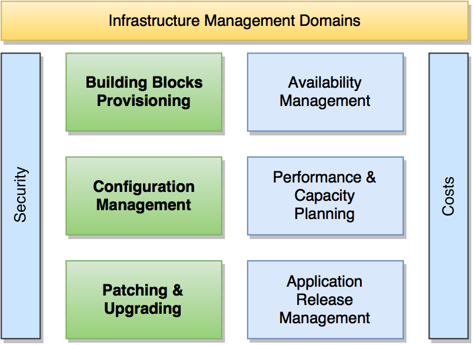

João Pinto
Make like this:

The following improvements will be made:
More Efficiency
More Elaticity
More Resilience
You will get:
Processing (VMs, SO, MDW)
Storage (Virtual Disks)
Network (Balancing & FW)
Just create new blocks with elasticity
Build
RandomX
Config
config.json
Just an item